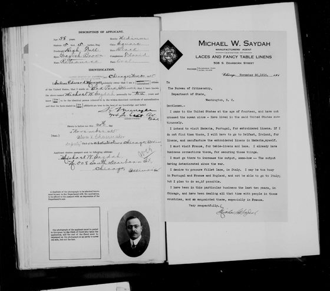
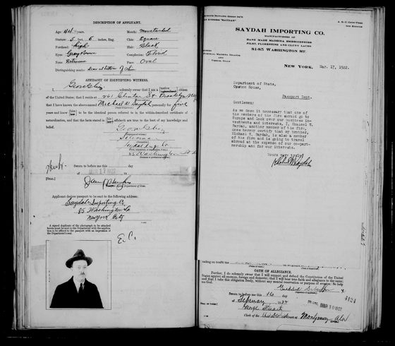

The brother who went west. He lived in Chicago and Oak Park, Illinois, before moving to Brooklyn, where he was living by December 1919.
- Born
- 6 August 1877 on his draft card; the year is open Confirmed
- Came to America
- October 1891, as a teenager, by his own sworn statements (the 1925 census implies about 1889); the sailing has not been found Confirmed
- Citizen
- 18 March 1903, Cook County, Illinois, by his own sworn statement in his 1917 and 1922 passport applications; the certificate has not been seen Confirmed
- Married
- Marie A. Luckey (1901); later Zakeya Lian, born in Zahle Probable
- Died
- 1 March 1953; services at St. Nicholas Cathedral; buried at Green-Wood Confirmed
- Brothers and sisters
- Antoon (Anton) Saydah, Khaleel W. Saydah, Murad Saydah, Sada Kirkish, Nustas Kirkish Confirmed
Spellings in the records: Michael W. Saydah; the W. stands for Wahbeh.
Read the full story All the people
Documents about Michael W. Saydah

Document 153Michael's own letter with his passport application, 30 November 1915 Document 1041925 New York State census: Michael Saydah and a second Saydah household
Document 1041925 New York State census: Michael Saydah and a second Saydah household
Document 154Khaleel's letter for Michael, 17 March 1922 Document 108Brooklyn Eagle death notice for Michael W. Saydah, 3 March 1953
Document 108Brooklyn Eagle death notice for Michael W. Saydah, 3 March 1953 Document 58Victor M. Saydah, died 31 December 1919
Document 58Victor M. Saydah, died 31 December 1919 Document 59Theodore Saydah, died 9 February 1922
Document 59Theodore Saydah, died 9 February 1922 Document 150Michael's death notice, As-Sameer, 2 March 1953
Document 150Michael's death notice, As-Sameer, 2 March 1953Each fact carries its label: Confirmed (shown in a record), Family (told to us) or Probable (fits but unproven). Living relatives are not listed.